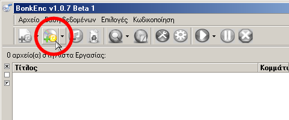
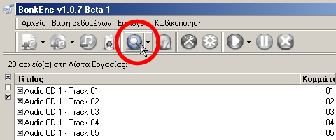
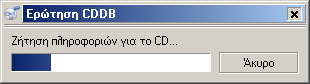
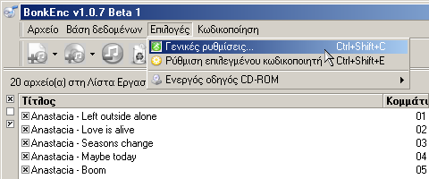
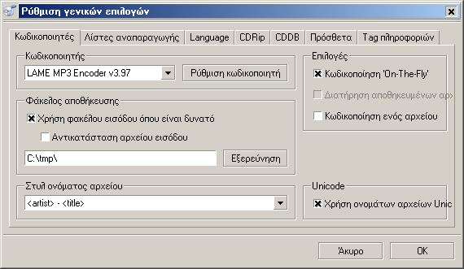
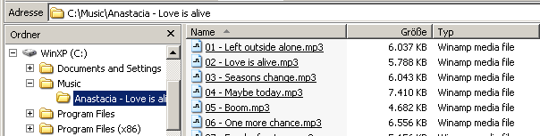
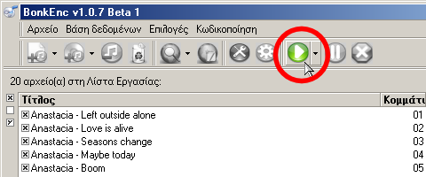
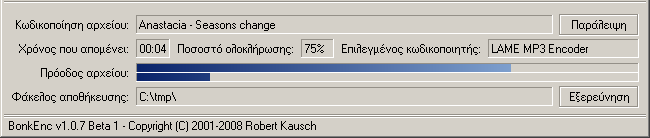

Μεταφορτώστε ('κατεβάστε') την τελευταία έκδοση του προγράμματος fre:ac είτε από το SourceForge είτε από την ιστοδελίδα του fre:ac. Εγκαταστήστε το πρόγραμμα και εκκινήστε το. Βάλτε τώρα, ένα μουσικό CD (audio CD) στο CD/DVD του υπολογιστή σας. Τα τραγούδια του CD σας, θα εμφανιστούν αυτόματα στο κυρίως παράθυρο του fre:ac.
Εάν δεν εμφανιστούν πατήστε το κουμπί "Προσθήκη περιεχομένων CD ήχου στη λίστα εργασίας" ώστε να εμφανιστούν τα τραγούδια, όπως φαίνεται παρακάτω:
Μιάς και δεν θέλουμε να γράψουμε τα ονόματα των τραγουδιών χειροκίνητα (και έχουμε σύνδεση στο Διαδίκτυο) μπορούμε να 'ρωτήσουμε' μια Διαδικτυακή Βάση Δεδομένων για να συμπληρωθούν αυτόματα τα ονόματα των τραγουδιών.
Για να γίνει αυτό απλώς πηγαίνουμε στο μενούν "Βάση Δεδομένων" και επιλέγουμε το "Ερώτηση βάση δεδομένων CDDB".
Θα εμφανιστεί μια οθόνη σαν αυτή:
Το πρόγραμμα θα εμφανίσει αυτόματα τα ονόματα των τραγουδιών, εάν αυτά υπάρχουν καταχωρημένα, αλλιώς θα τα γράψουμε ένα, ένα :)
Αφού γίνει αυτό, μπορούμε να επεξεργαστούμε τις γενικές ρυθμίσεις του προγράμματος. Πηγαίνετε στο μενού "Επιλογές" και επιλέξτε "Γενικές ρυθμίσεις", όπως φαίνεται παρακάτω:
Θα εμφανιστεί η παρακάτω εικόνα:
Σε αυτήν την οθόνη μπορούμε να ορίσουμε τις ρυθμίσεις του κωδικοποιητή. Το fre:ac έχει ως αρχικό κωδικοποιητή τον LAME MP3. [Σ.τ.Μτφ. Συνιστώ και σε εσάς να τον χρησιμοποιείται μιας και εκτός από δωρεάν και Ανοιχτού Κώδικα, είναι ίσως ο καλύτερος στον κόσμο.] Αυτόν θα χρησιμοποιήσουμε σε αυτήν την περίπτωση. Σιγουρευτείτε πως η επιλογή "Encode on the fly" είναι επιλεγμένη. Επίσης ρυθμίστε το που θέλετε να αποθηκευτούν τα MP3's που θα κωδικοποιήσετε, στο παράδειγμα που βλέπετε θα πάνε στο C:\Music\.
Η επιλογή 'Στυλ ονόματος αρχείου' μας επιτρέπει να ορίσουμε πως θα διαμορφωθεί το όνομα και ο φάκελλος των αρχείων MP3που θα δημιουργήσουμε. Στο παράδειγμά μας θα χρησιμοποιήσουμε φακέλλους όπου θα αναφέρεται το όνομα του καλλιτέχνη και ο τίτλος του CD και τα τραγούδια θα είναι σύμφωνα με τη σειρά του CD και τους τίτλους τους. Άρα θα επιλέξουμε αυτήν την επιλογή: "<artist> - <album>\<track> - <title>". Έτσι τα αρχεία μας θα έχουν την ακόλουθη μορφή:
Για τους πιό προχωρημένους χρήστες υπάρχουν πολλές άλλες επιλογές ώστε να κάνετε τις επιλογές της αρεσκείας σας.
Τώρα θα πρέπει να ρυθμίσουμε τον κωδικοποιητή LAME ώστε η ποιότητα των αρχείων που θα δημιουργήσουμε να είναι ικανοποιητική. Πηγαίνουμε λοιπόν ξανά στο μενού "Επιλογές" και επιλέγουμε "Ρύθμιση επιλεγμένου κωδικοποιητή".

Θα εμφανιστεί μια οθόνη σαν την ακόλουθη:

Το fre:ac περιέχει αρκετές έτοιμες ρυθμίσεις για τον κωδικοποιητή LAME. Αυτές οι ρυθμίσεις ρυθμίζουν την ποιότητα του ήχου του παραγόμενου αρχείου. Όσο υψηλότερη η ποιότητα του ήχου, (π.χ. επιλογή "Extreme") τόσο περισσότερο χώρο θα καταλαμβάνουν στο σκληρό δίσκο τα αρχεία που θα δημιουργήσουμε, αλλά θα έχουν και καλύτερη πιστότητα. Ο συγγραφέας του εγχειριδίου προτιμά τις ρυθμίσεις "Προσαρμοσμένες ρυθμίσεις" και την χειροκίνητη ρύθμιση στην επιλογή "Ποιότητα" όπως φαίνεται παραπάνω. Προς το παρόν, στην επιλογή "Χρήση προεπιλογής", επιλέξτε "Μέτρια" και πατήστε OK. [Σ.τ.Μτφ: Αφού μάθετε να χρησιμοποείτε το πρόγραμμα αυτό μπορείτε να πειραματιστείτε και να βρείτε τις ρυθμίσεις που σας ταιριάζουν. Έτσι και αλλιώς η ακρόαση μουσικής είναι κάτι πολύ προσωπικό και σίγουρα θα βρείτε τις ρυθμίσεις που σας ταιριάζουν καλύτερα :) ] Τώρα μπορούμε να δούμε πως θα επιλέξουμε τα τραγούδια που θέλουμε και να τα κωδικοποιήσουμε και να τα αποθηκεύσουμε.
Επιστρέψαμε στην κύρια οθόνη του προγράμματος και μπορούμε να επιλέξουμε ποιά από τα τραγούδια θα κωδικοποιήσουμε και θα αποθηκεύσουμε. Στην αριστερή πλευρά κάθε τραγουδιού υπάρχει ένα μικρό κουτάκι. Όσα από αυτά διαθέτουν ένα × στο κουτάκι αυτό, είναι επιλεγμένα για αντιγραφή και κωδικοποίηση. Στο παράδειγμά μας θέλουμε να αντιγράψουμε όλο το CD, οπότε αφήνουμε επιλεγμένα και τα 5 τραγούδια αλλά αν θέλαμε μόνο ένα από αυτά θα έπρεπε να επιλέξουμε μόνο αυτό το ένα και μην έχουμε τα υπόλοιπα επιλεγμένα.
Μπορούμε τώρα να πατήσουμε το κουμπί "Έναρξη της διαδικασίας κωδικοποίησης", όπως φαίνεται παρακάτω και να ξεκινήσει η διαδικασία κωδικοποίησης.
Στο κάτω μέρος της οθόνης θα εμφανιστεί μια γραμμή που θα μας δείχνει την πρόοδο της κωδικοποίησης:
Όταν τελειώνει η κωδικοποίηση κάθε τραγουδιού, αυτό θα αφαιρείται από τη λίστα που υπάρχει παραπάνω.
Συγχαρητήρια! Μόλις αντιγράψατε και κωδικοποιήσατε το πρώτο σας CD με τη βοήθεια του προγράμματος fre:ac!